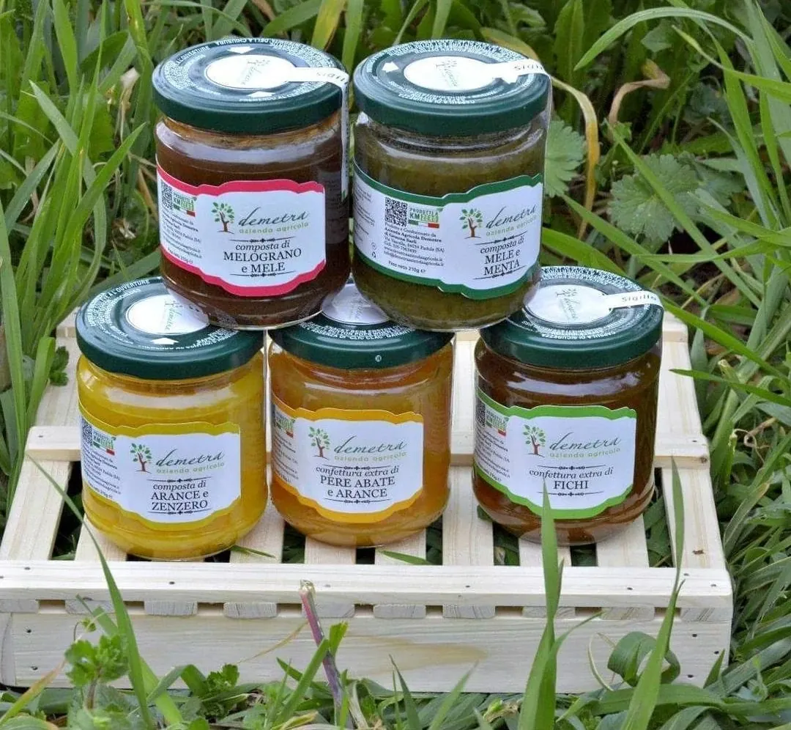
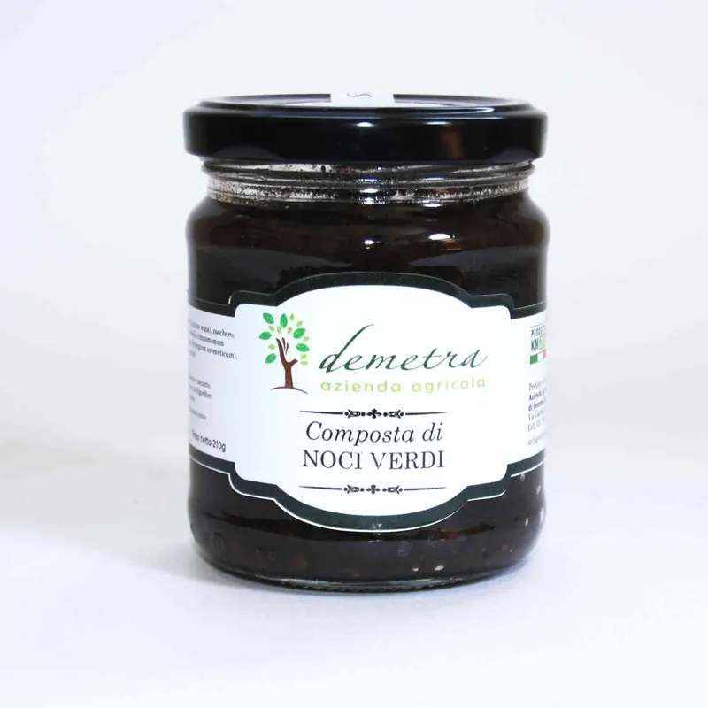

La bottega
Quello che cresce qui, in vasetto
Composte, marmellate e sott'oli fatti nel laboratorio di Demetra con la frutta e l'orto dell'azienda. Senza conservanti: quando un vasetto finisce, si aspetta il raccolto dopo.

Paghi online
Gli ordini passano da Italiatipici, il mercato dei piccoli produttori. Scegli, paghi sul loro sito con pagamento sicuro e ricevi a casa.
Oppure passi da noi
Tutti i prodotti si trovano anche nello spaccio in azienda, a Padula. Dove siamo
Una richiesta particolare?
Confezioni regalo o quantità più grandi: scrivi a Gemma su WhatsApp.
Composte e marmellate

Composta di noci verdi
Noci raccolte acerbe, a inizio estate. Con i formaggi stagionati.
AcquistaConserve e sott'oli


Nello spaccio, secondo stagione, trovi anche miele millefiori, zafferano, biscotti e taralli.